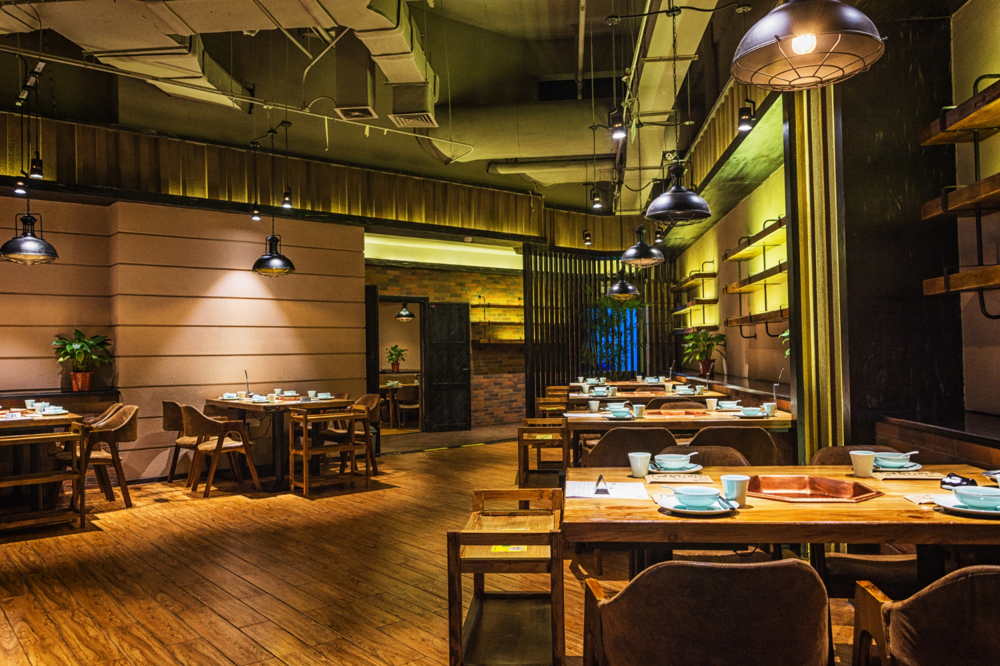

The Afrofusion Story
After working as a cook in exclusive Safari lodges around East & West Africa, Afrofusion has gone back to it's roots preparing home-style dishes with a modern eclectic twist. Afrofusion is an unpretentious, fun, modern day African roadside diner. Locally inspired, some of our skilfully concocted dishes include Jollof Rice, Fried Rice, and Grilled Chicken, served with a variety of Afrofusions famous stews. Indulge in some nostalgia with our sharing platters and signature cocktails served in iconic metal Cups.
Contact Us Order Now
